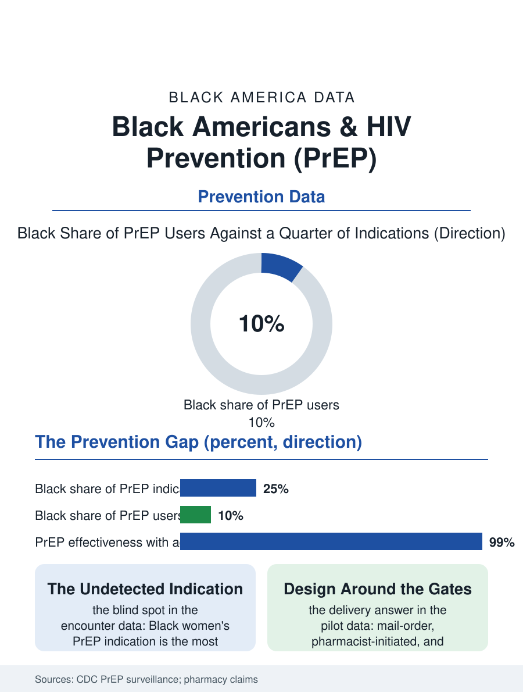

Black Public Health
The Largest Prevention Gap: Black Americans and PrEP
A quarter of PrEP indications are Black, a tenth of users are, and the pill is ninety-nine percent effective with adherence: the prevention file's largest gap. The PrEP file.

Pre-exposure prophylaxis, the daily or on-demand pill that prevents HIV infection, is one of the most effective prevention tools ever developed, reducing sexual transmission risk by about ninety-nine percent with adherence, and its uptake among Black Americans, who bear the largest share of new HIV diagnoses, is the prevention file's central failure: roughly a quarter of the people with a PrEP indication are Black, while a small fraction of PrEP users are. This article reads the PrEP file.
The Indication and the Uptake
The Centers for Disease Control's estimates frame the gap with unusual clarity. About 1.2 million Americans have a clinical indication for PrEP, and Black Americans constitute roughly a quarter of that population, reflecting the diagnosis burden's geography, while pharmacy and claims data place the Black share of actual PrEP users in the low single digits to low teens depending on the dataset, a tenfold underrepresentation that has persisted through the drug's decade of availability and its generic era. The populations within the population sharpen the file: Black men who have sex with men, the group with the highest indication and the highest diagnosis burden, show the lowest PrEP coverage of any demographic group the surveillance systems can tabulate, and Black women, whose indication is frequently unrecognized in the clinical encounter because the risk assessment scripts were written for the male epidemic, are the most under-prescribed relative to their diagnosis share in the claims data. The adherence data add the second gap: among Black users who do start, continuation at a year trails the other groups, the persistence curve falling at the refill, the lab, and the insurance reauthorization steps the cascade literature names.
The Prescription's Obstacles
The obstacles file is specific and largely logistical, again in the pattern of the trials and screening files. The clinical encounter is the first gate: primary care clinicians report low PrEP prescribing comfort, the sexual history questions that would surface the indication are asked inconsistently, and the risk assessment's demographic blind spots leave Black women's indication undetected in the encounter studies. The cost gate followed the drug's patent history: the branded era's price made the assistance programs the de facto access system, and the generic era's lower price has not fully translated into the uninsured and Medicaid populations' uptake, because the required quarterly labs, the HIV test, the kidney function, the STI panel, carry their own costs and visits in the uninsured patient's arithmetic. The stigma gate is the file's cultural layer: the pill's association with the populations the prescriber's waiting room judges, the partner's and family's reading of a prevention prescription as a confession, and the medical mistrust file's contribution, documented in the qualitative literature as a live variable rather than a historical echo, all suppress the request itself. The pharmacy and telehealth models that bypass the encounter, the mail-order PrEP programs and the sexual health clinics of the community organizations, post the file's best Black uptake figures, by designing around the gates rather than asking the patient to climb them.
Closing the Largest Prevention Gap
The PrEP file closes with the arithmetic the diagnosis data impose: the national HIV strategy's targets, the reduction of new diagnoses by ninety percent, are mathematically impossible without closing the Black PrEP gap, since the gap's population is the plurality of the new diagnoses the strategy must avert. The interventions the evidence supports are the delivery redesigns already demonstrating results in the pilot data, the opt-out sexual health screening that surfaces the indication without requiring the patient to name it, the pharmacist-initiated and telehealth models that move the prescription out of the judgmental encounter, the long-acting injectable formulation whose two-month dosing removes the daily adherence and refill cascade entirely and whose early Black uptake data, while still thin, run ahead of the pill's, and the community organizations' outreach in the language and venues of the at-risk populations themselves. The pill has worked for a decade in the trials and the adherent. The file's verdict is that the prevention failure is a delivery failure, and the delivery failure is measurable, in users against indications, in the low single digits against the quarter. The gap is the largest in the prevention record, and the record's own arithmetic says the epidemic's endgame runs through it.
More in Black Public Health
Hypertension Among Black Adults: Prevalence, Control, and Consequences
About 55 percent of Black adults have hypertension — the highest rate of any U.S. group. Prevalence, onset, control, and the stroke, heart, and kidney consequences in the data.
Diabetes Among Black Adults: Prevalence and Complications
Nearly one in five Black adults has diabetes, diagnosed or undiagnosed — and its complications fall with particular weight. The CDC data on prevalence, control, and outcomes.
Black Life Expectancy: The Gap at Birth and Its Causes
Black life expectancy at birth is about 73 years, roughly five years below the national figure — the summary measure of every health gap in this section. The CDC data.
Source: Centers for Disease Control and Prevention, HIV surveillance and PrEP use estimates; pharmacy claims analyses of PrEP uptake.